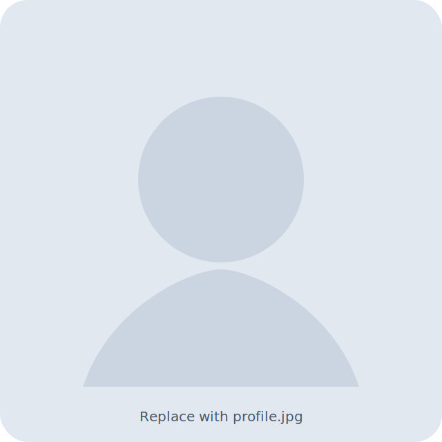

Group Leader at N3Cat, UPC Barcelona
Ethungshan Shitiri
Ultra low power nanoscale systems for in body diagnostics and monitoring
I lead research on intra body nanonetworks, molecular communication, and nanoscale sensing with a focus on practical system level models for early stage disease detection.
Edit site content in assets/data
- News feed is in assets/data/news.json
- Projects are in assets/data/projects.json
- Publications are in assets/data/publications.json

Replace the placeholder image with assets/img/profile.jpg and update the img tag in index.html if you want.
Research
Focus areas
- Intra body nanonetworks and molecular communication
- System level modeling for sensing performance and time to detection
- Nanoscale sensing interfaces and biophysical constraints in whole blood
- Near field passive wireless concepts for in body monitoring
How to read this site
Start with Projects for current funded work, then Publications for the full list. The CV page is a web friendly version that you can print to PDF using your browser.
This site is plain HTML, CSS, and small JavaScript so it loads fast and is easy to edit.
News
Contact
Email is the best way to reach me.